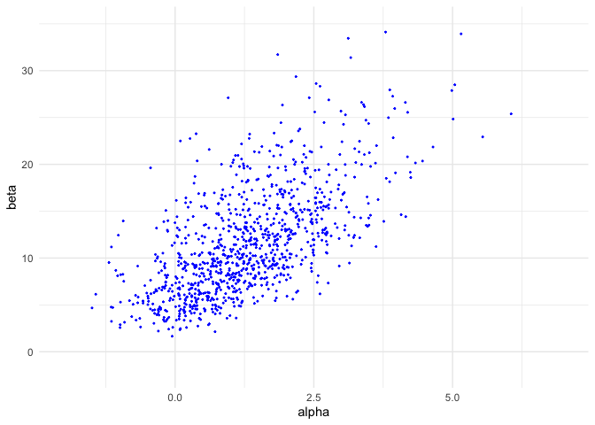
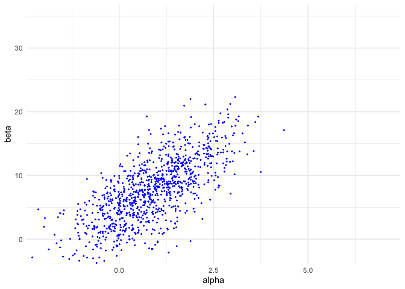
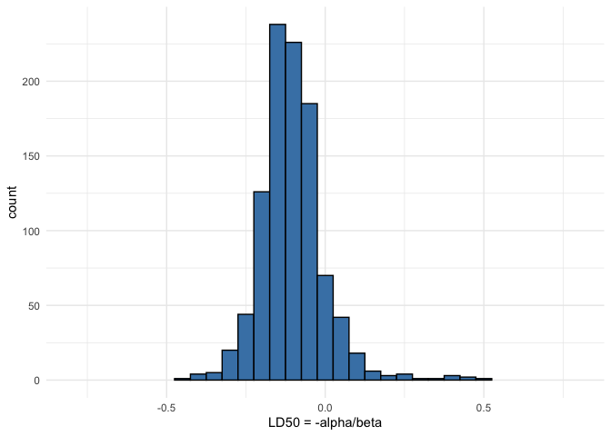
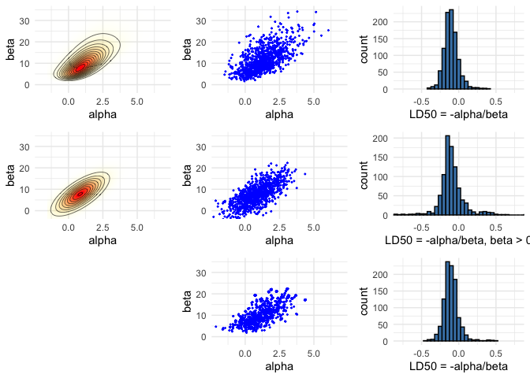

Bayes Statistics HW6
10-4
10-4a
Suppose that \(\theta\) is drawn forme the density proportional to \(g(\theta)\), and U is a random Uniform(0,1) draw. Then we can express the cdf of draws accepted by rejection sampling as
which is the cdf for \(p(\theta|y)\).
10-4b
Above proof requires that (i) \(g(\theta) > 0\) wherever \(p(\theta) > 0\) and that (ii) \(p(\theta)/Mg(\theta) \leq 1\) always. If \(p/g\) is unbounded, than one or both of (i) and (ii) will be violated.
11-1
As described on 279, consider any two points \(\theta_a\) and \(\theta_b\) at iteration t labeled so that \(p(\theta_b|y)J_t(\theta_a|\theta_b) \geq p(\theta_a|y)J_t(\theta_b|\theta_a)\). To show that the posterior distribution is a stationary distribution, suppose that \(\theta^{t-1}\) is a draw from the posterior distribution. Then teh unconditional probability density of a transition from \(\theta_a\) to \(\theta_b\) is
$\(p(\theta^{t-1}=\theta_a,\theta^t=\theta_b) = p(\theta_a|y)J_t(\theta_b|\theta_a)\)$,
where the acceptance probability is 1 cuz of our labeling of a and b so that the ratio of importance ratios is at least 1. The uncinditional probability density of a transition from \(\theta_b\) to \(\theta_a\) is
$\(p(\theta^t=\theta_a,\theta^{t-1}=\theta_b)=p(\theta_b|y)J_t(\theta_a|\theta_b)(\frac{p(\theta_a|y)/J_t(\theta_)a|\theta_b)}{p(\theta_b|y)/J_t(\theta_b|\theta_a)})\)$,
whichi is the same as the unconditional probability in the other direction. Since their joint distribution is symmetric, \(\theta^t\) and \(\theta^{t-1}\) have the same marginal distributions, and so \(p(\theta|y)\) is a stationary distribution of the Markov chain.
As with the Metropolis algorithm, the stationary distribution is unique if the Markov chain is irreducible, aperiodic, and not transient.
Importance sampling with normal distribution as a proposal for Bioassay model
library(ggplot2)
theme_set(theme_minimal())
library(gridExtra)
library(grid)
library(tidyr)
library(MASS)
library(loo)
## This is loo version 2.4.1
## - Online documentation and vignettes at mc-stan.org/loo
## - As of v2.0.0 loo defaults to 1 core but we recommend using as many as possible. Use the 'cores' argument or set options(mc.cores = NUM_CORES) for an entire session.
df1 <- data.frame(x = c(-0.86, -0.30, -0.05, 0.73),n = c(5, 5, 5, 5),
y = c(0, 1, 3, 5))
A = seq(-1.5, 7, length.out = 100)
B = seq(-5, 35, length.out = 100)
# make vectors that contain all pairwise combinations of A and B
cA <- rep(A, each = length(B))
cB <- rep(B, length(A))
logl <- function(df, a, b)
df['y']*(a + b*df['x']) - df['n']*log1p(exp(a + b*df['x']))
# calculate likelihoods: apply logl function for each observation
# ie. each row of data frame of x, n and y
p <- apply(df1, 1, logl, cA, cB) %>%
# sum the log likelihoods of observations
# and exponentiate to get the joint likelihood
rowSums() %>% exp()
nsamp <- 1000
samp_indices <- sample(length(p), size = nsamp,
replace = T, prob = p/sum(p))
samp_A <- cA[samp_indices[1:nsamp]]
samp_B <- cB[samp_indices[1:nsamp]]
# add random jitter, see BDA3 p. 76
samp_A <- samp_A + runif(nsamp, (A[1] - A[2])/2, (A[2] - A[1])/2)
samp_B <- samp_B + runif(nsamp, (B[1] - B[2])/2, (B[2] - B[1])/2)
samp_ld50 <- -samp_A/samp_B
xl <- c(-2, 7)
yl <- c(-2, 35)
pos <- ggplot(data = data.frame(cA ,cB, p), aes(x = cA, y = cB)) +
geom_raster(aes(fill = p, alpha = p), interpolate = T) +
geom_contour(aes(z = p), colour = 'black', size = 0.2) +
coord_cartesian(xlim = xl, ylim = yl) +
labs(x = 'alpha', y = 'beta') +
scale_fill_gradient(low = 'yellow', high = 'red', guide = F) +
scale_alpha(range = c(0, 1), guide = F)
pos

sam <- ggplot(data = data.frame(samp_A, samp_B)) +
geom_point(aes(samp_A, samp_B), color = 'blue', size = 0.3) +
coord_cartesian(xlim = xl, ylim = yl) +
labs(x = 'alpha', y = 'beta')
sam

his <- ggplot() +
geom_histogram(aes(samp_ld50), binwidth = 0.05,
fill = 'steelblue', color = 'black') +
coord_cartesian(xlim = c(-0.8, 0.8)) +
labs(x = 'LD50 = -alpha/beta')
his

Normal approximation for Bioassay model
bioassayfun <- function(w, df) {
z <- w[1] + w[2]*df$x
-sum(df$y*(z) - df$n*log1p(exp(z)))
}
w0 <- c(0,0)
optim_res <- optim(w0, bioassayfun, gr = NULL, df1, hessian = T)
w <- optim_res$par
S <- solve(optim_res$hessian)
dmvnorm <- function(x, mu, sig)
exp(-0.5*(length(x)*log(2*pi) + log(det(sig)) + (x-mu)%*%solve(sig, x-mu)))
p <- apply(cbind(cA, cB), 1, dmvnorm, w, S)
samp_norm <- mvrnorm(nsamp, w, S)
bpi <- samp_norm[,2] > 0
samp_norm_ld50 <- -samp_norm[bpi,1]/samp_norm[bpi,2]
pos_norm <- ggplot(data = data.frame(cA ,cB, p), aes(x = cA, y = cB)) +
geom_raster(aes(fill = p, alpha = p), interpolate = T) +
geom_contour(aes(z = p), colour = 'black', size = 0.2) +
coord_cartesian(xlim = xl, ylim = yl) +
labs(x = 'alpha', y = 'beta') +
scale_fill_gradient(low = 'yellow', high = 'red', guide = F) +
scale_alpha(range = c(0, 1), guide = F)
pos_norm

sam_norm <- ggplot(data = data.frame(samp_A=samp_norm[,1], samp_B=samp_norm[,2])) +
geom_point(aes(samp_A, samp_B), color = 'blue', size = 0.3) +
coord_cartesian(xlim = xl, ylim = yl) +
labs(x = 'alpha', y = 'beta')
sam_norm

his_norm <- ggplot() +
geom_histogram(aes(samp_norm_ld50), binwidth = 0.05,
fill = 'steelblue', color = 'black') +
coord_cartesian(xlim = c(-0.8, 0.8)) +
labs(x = 'LD50 = -alpha/beta, beta > 0')
his_norm

Importance sampling for Bioassay model
ldmvnorm <- function(x, mu, sig)
(-0.5*(length(x)*log(2*pi) + log(det(sig)) + (x-mu)%*%solve(sig, x-mu)))
lg <- apply(samp_norm, 1, ldmvnorm, w, S)
lp <- apply(df1, 1, logl, samp_norm[,1], samp_norm[,2]) %>% rowSums()
lw <- lp-lg
psislw <- psis(lw, r_eff = 1)
## Warning: Some Pareto k diagnostic values are too high. See help('pareto-k-diagnostic') for details.
print(psislw$diagnostics$pareto_k, digits=2)
## [1] 0.74
print(psislw$diagnostics$n_eff, digits=2)
## [1] 385
psisw <- exp(psislw$log_weights)
samp_indices <- sample(length(psisw), size = nsamp,
replace = T, prob = psisw)
rissamp_A <- samp_norm[samp_indices,1]
rissamp_B <- samp_norm[samp_indices,2]
# add random jitter, see BDA3 p. 76
rissamp_A <- rissamp_A + runif(nsamp, (A[1] - A[2])/2, (A[2] - A[1])/2)
rissamp_B <- rissamp_B + runif(nsamp, (B[1] - B[2])/2, (B[2] - B[1])/2)
# samples of LD50
rissamp_ld50 <- -rissamp_A/rissamp_B
sam_ris <- ggplot(data = data.frame(rissamp_A, rissamp_B)) +
geom_point(aes(rissamp_A, rissamp_B), color = 'blue', size = 0.3) +
coord_cartesian(xlim = xl, ylim = yl) +
labs(x = 'alpha', y = 'beta')
sam_ris

his_ris <- ggplot() +
geom_histogram(aes(rissamp_ld50), binwidth = 0.05,
fill = 'steelblue', color = 'black') +
coord_cartesian(xlim = c(-0.8, 0.8)) +
labs(x = 'LD50 = -alpha/beta')
his_ris

blank <- grid.rect(gp=gpar(col="white"))

grid.arrange(pos, sam, his, pos_norm, sam_norm, his_norm, blank, sam_ris, his_ris, ncol=3)
